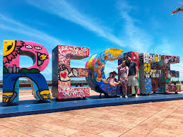

Passeios no Recife
A verdade é que a cidade do Recife em si não tem tantos passeios. A grande maioria dos passeios vendidos pelas agências refere-se a praias do litoral norte e do litoral sul de Pernambuco. Quem está de carro não precisa recorrer a nenhuma agência e pode fazer vários desses passeios por conta própria. Vale a pena conhecer as praias próximas de carro e, assim, traçar seu próprio roteiro, dedicando o tempo que preferir às praias. Na cidade, o passeio mais famoso é o de catamarã pelo Rio Capibaribe e suas pontes, em que turistas podem conhecer um pouco da parte antiga do Recife, edifícios seculares, pontes histórias. Esse passeio é bem legal e pode ser feito tanto durante o dia quanto à noite. Nossa recomendação é fazê-lo à noite e admirar a capital toda iluminada. Quem quer explorar um pouco das praias pernambucanas não deve deixar de conhecer praias do litoral sul, como a baladíssima Porto de Galinhas, além de Carneiros e da pequena Calhetas. No norte do estado, a Ilha de Itamaracá é uma das opções mais procuradas.
Compras no Recife
Se você vai viajar para Recife, é bom conhecer os melhores lugares para fazer compras e aproveitar ainda mais os seus passeios pela cidade. A dica é deixar um espacinho livre na mala para as lembranças e presentes, que sempre encantam quem visita a região. Vale a pena visitar o novo Mercado de Artesanato, que também fica na Praça Rio Branco. De feiras e mercados públicos tradicionais a praças, shoppings e centros comerciais amplos e modernos, o roteiro de compras na capital pernambucana conta com opções imperdíveis para todos os gostos e bolsos.
Artesanato: Encontre lembranças únicas nas lojas de artesanato da região